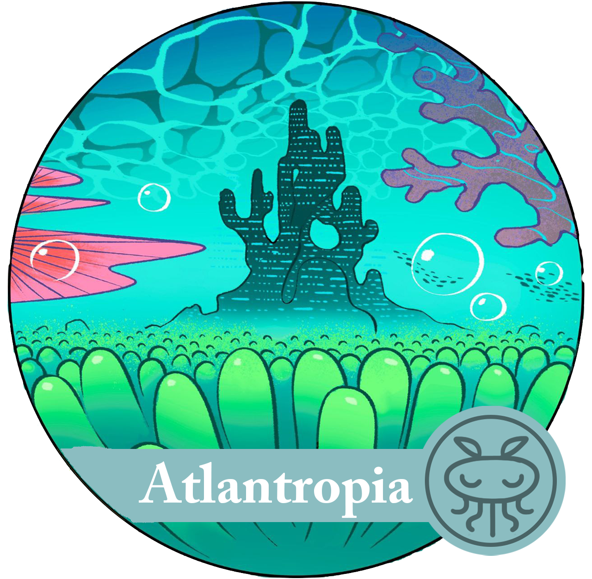

Solara é um planeta distante e místico, habitado pelas mais diversas criaturas e coberto por uma aura de magia e paz. Porém as coisas começaram a mudar com a chegada dos humanos, que implantaram o capitalismo e a exploração nessa terra mágica. Nessa história, 3 regiões ganharam um destaque especial: Capitown, a cidade do mundo novo. Etheria, a resistência das criaturas místicas. E Atlantropia, a ditadura dos mares.
Em um mundo distante e corrompido pela sede de poder e exploração desenfreada está uma cidade com aura sedutora de progresso e de poder. A cidade, construída pelos humanos que escaparam da destruição da Terra, tornou-se um reduto para corporações gananciosas e corruptas, ansiosas para explorar os recursos do novo planeta.
Capitown, uma cidade imponente e decadente, ergue-se como um monumento à ganância humana e à busca desenfreada pelo poder. As ruas são preenchidas com arranha-céus de vidro e aço, exibindo as marcas das grandes corporações que controlam cada aspecto da vida na cidade.
Cartazes publicitários brilhantes e neons chamativos competem por atenção, anunciando produtos e promessas vazias de riqueza e sucesso. Os habitantes de Capitown estão imersos na mentalidade competitiva e individualista, cada um lutando para subir na escada do poder, independentemente das consequências para os outros.

Nas profundezas do oceano, encontra-se Atlantropia, um reino submarino governado por um ditador tirano. A cidade subaquática, com suas torres de mármore e palácios majestosos, parece deslumbrante à primeira vista, mas as águas cristalinas escondem segredos sombrios. Sob o governo opressor, a população de Atlantropia vive em constante medo e opressão.
O ditador busca acumular poder e controle absoluto, explorando as riquezas dos mares e subjugando os cidadãos por meio de uma vigilância implacável. Alguns habitantes de Atlantropia desejam a liberdade e um futuro melhor, mas enfrentam um inimigo poderoso e uma batalha difícil pela frente.
